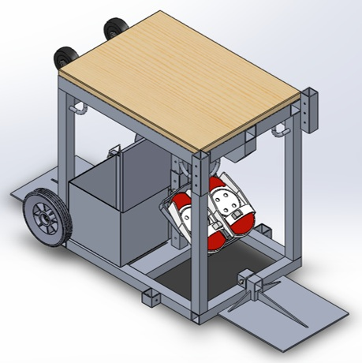
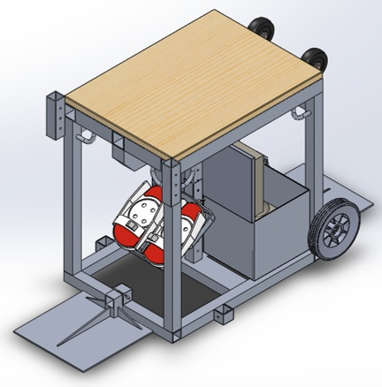
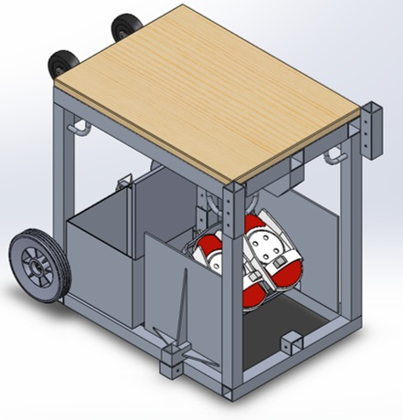
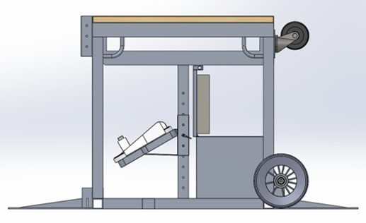
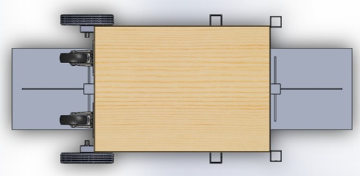
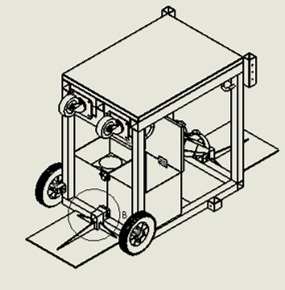
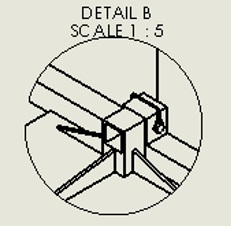
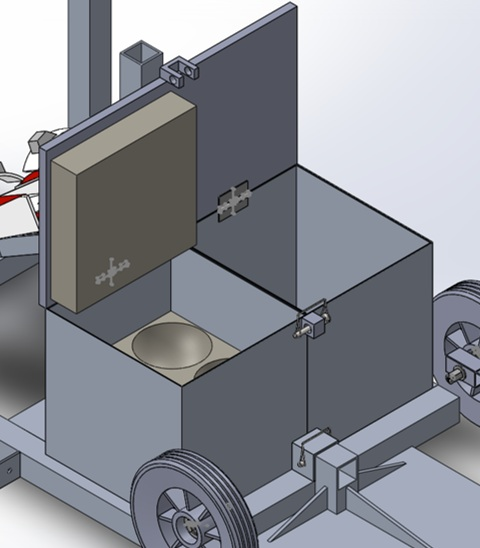
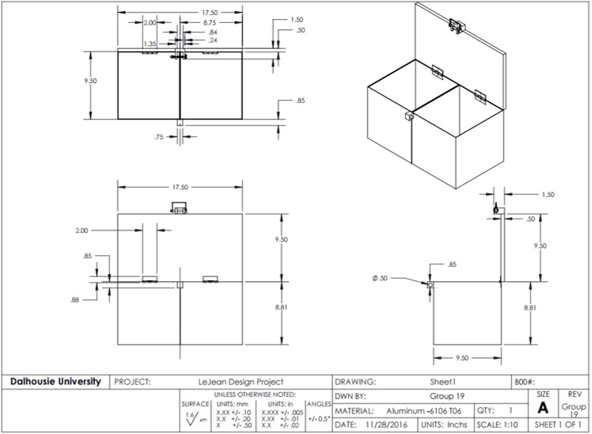

Complete cart design
Original CAD views showing the cart and stabilization system from several angles.


CAD views
Complementary views showing the cart geometry and how the components are arranged.




Stabilization system
Component geometry and attachment detail from the original design package.


Storage box design
Additional components from the broader group project, included to show the complete cart concept.


Purpose and features
Design objective
The removable stabilization system was developed to address rocking and tipping concerns where conventional anchoring straps could not be used.
Design features
- Removable support-pad configuration
- Triangular ribs intended to provide stiffness
- Front and rear stabilizing locations
- Virtual integration with the cart assembly
Validation and next steps
A CAD model of the stabilization system was designed in SolidWorks. No physical manufacturing or fabrication was completed. The next steps would be a finite element method (FEM) assessment, followed by approval for fabrication and physical testing.